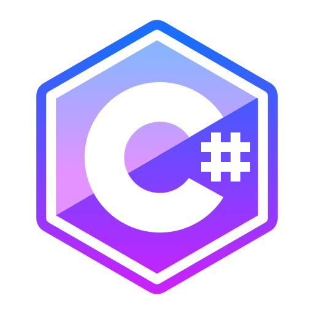
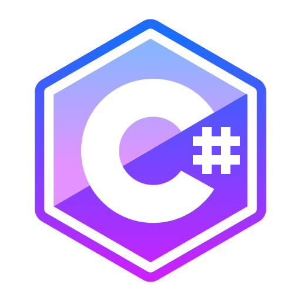

José Vincios
               
                   
            Sou José Vinícius, desenvolvedor web apaixonado por tecnologia, sempre buscando evoluir e entregar o melhor em cada projeto.
                   Atualmente curso Análise e Desenvolvimento de Sistemas (ADS) e já concluí mais de 10 cursos certificados na área de programação, desenvolvimento web e tecnologias modernas.
                   Tenho experiência com projetos reais, foco em resultados e dedicação em cada linha de código.
                                   
                                        
                                        
                                        
                                         
               
                    
                                    
                   